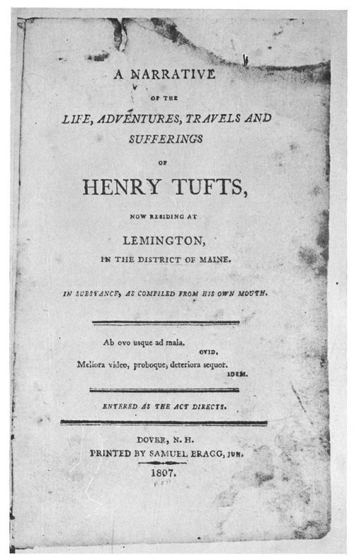
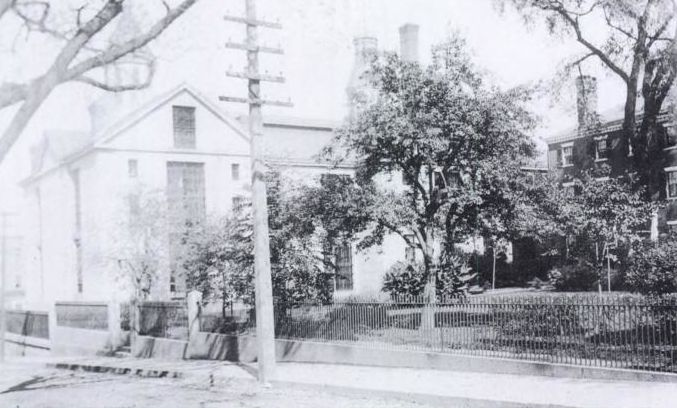

Biography
Henry Tufts Jr. was born at Newmarket, New Hampshire, on 24 June 1748, the eldest son of Henry Tufts Sr. and Mary (Wedgwood) Tufts. Tufts Kinsmen calls him, without softening, a “vagabond, deserting soldier AR, Indian doctor.” In 1770 he married Lydia Bickford at Durham, and they made a home beyond Newmarket Plains toward Lee Hook. He died at Limerick, Maine, on 31 January 1831 (Tufts Kinsmen, Vol. I, p. 62–63, no. 25-1).
and Mary (Wedgwood) Tufts. Tufts Kinsmen calls him, without softening, a “vagabond, deserting soldier AR, Indian doctor.” In 1770 he married Lydia Bickford at Durham, and they made a home beyond Newmarket Plains toward Lee Hook. He died at Limerick, Maine, on 31 January 1831 (Tufts Kinsmen, Vol. I, p. 62–63, no. 25-1).

His life of crime, imprisonment, escape and doctoring among the Saint Francis Indians is told in his own memoir, summarised below.
From the Family Record
The family record numbers him 25-1, the eldest son of Henry Tufts Sr. : born at Newmarket on June 24, 1748; married Lydia Bickford at Durham in 1770; died at Limerick, Maine, on January 31, 1831. He signed the Association Test “along with his father” (Tufts Kinsmen, Vol. I, p. 62–63, no. 25-1). It also covers his conviction in 1793, the commuting of his sentence to imprisonment at Castle Island in Boston Harbor, his years among the Saint Francis Indians learning doctoring from Molly Ockit, and the town of Limerick’s payments to him for doctoring its poor (pp. 63–64). It dates his memoir to Dover, N.H., printed by Samuel Bragg Jr., 1807 (p. 64).
: born at Newmarket on June 24, 1748; married Lydia Bickford at Durham in 1770; died at Limerick, Maine, on January 31, 1831. He signed the Association Test “along with his father” (Tufts Kinsmen, Vol. I, p. 62–63, no. 25-1). It also covers his conviction in 1793, the commuting of his sentence to imprisonment at Castle Island in Boston Harbor, his years among the Saint Francis Indians learning doctoring from Molly Ockit, and the town of Limerick’s payments to him for doctoring its poor (pp. 63–64). It dates his memoir to Dover, N.H., printed by Samuel Bragg Jr., 1807 (p. 64).
Service Record
Town: Newmarket and Lee, N.H.; Limerick, Me. · Dates: 24 June 1748 – 31 Jan. 1831
Source: Tufts Kinsmen, Vol. I, p. 62–63, no. 25-1
The Massachusetts record confirms the third enlistment:
“Tufts, Henry. Return of men raised in Essex Co. for Continental service, agreeable to resolve of Dec. 2, 1780; engaged for town of Salisbury; engaged March 26, 1781; term, 3 years.”
Massachusetts Soldiers and Sailors of the Revolutionary War, vol. XVI (1907), p. 135. Internet Archive · page scan

Family Connection
Parents: Henry Tufts Sr. (1716–1780) and Mary (Wedgwood) Tufts. Brothers named in his letters: Thomas
and Mary (Wedgwood) Tufts. Brothers named in his letters: Thomas and Eliphalet. Wife: Lydia Bickford. Children (Tufts Family 70): Simeon, Thomas, Deborah, Hannah, Nancy A. and Catherine (Tufts Kinsmen, Vol. I, p. 62–63).
and Eliphalet. Wife: Lydia Bickford. Children (Tufts Family 70): Simeon, Thomas, Deborah, Hannah, Nancy A. and Catherine (Tufts Kinsmen, Vol. I, p. 62–63).
Relatives with profiles on this site: father Henry Tufts Sr. (1716–1780) ; brother Thomas Tufts of Lee
; brother Thomas Tufts of Lee .
.
Spouse(s)
- Lydia (Bickford) Tufts, of Bloody Point, Kittery, daughter of Joseph and Margery Bickford; born 1741 at Newington, N.H. (baptized May 9, 1742); married 1770 at Durham, N.H.; died August 1834 at Limerick, Me. (Tufts Kinsmen, Vol. I, p. 62–63, no. 25-1).
Authoritative IDs / Index Numbers
| Source | ID / status |
|---|---|
| Perseus person index (auth=) | Note: Pending further work. |
| Find a Grave memorial | Note: Pending further work. |
| Brooks, History of Medford (1855) register no. | Note: Pending further work. |
| Mass. Soldiers and Sailors | vol. XVI, p. 135 |
| DAR ancestor no. | Note: Pending further work. |
| FamilySearch ID | Note: Pending further work. |
| Geni profile | Note: Pending further work. |
| WikiTree ID | Note: Pending further work. |
| Town / vital records | Medford VRs not yet checked by volume and page |
Only IDs confirmed against dates and family are given as matches. “Not yet checked” means the source has not been searched; “Checked, not found” means it was searched without a match.
⚑ Unverified
Birth year: 1748 (family record) against “abt. 1735” on the older page. Captain “Dembo” and “Castee” (probably the Castle, Boston Harbor) are given as printed in the family record. The New Hampshire enlistments have not been checked against New Hampshire rolls. Note: Pending further work.
Pictures




Links and Resources
Every source, record, map, survey, marker and artifact tied to this person, gathered in one place. Page numbers are given where a book is cited.
Maps, Surveys and Artifacts
- — A Narrative of the Life … of Henry Tufts (1807), title page. The title page of A Narrative of the Life, Adventures, Travels and Sufferings of Henry Tufts , printed by Samuel Bragg Jr., Dover, N.H., 18
- Source: Wikimedia Commons — …… of Henry Tufts (1807), title page. The title page of A Narrative of the Life, Adventures, Travels and Sufferings of Henry Tufts, printed by Samuel Bragg Jr., Dover, N.H., 1807.Image: Samuel Bragg Jr., printer. Public domain.
- Massachusetts Soldiers and Sailors of the Revolutionary War, vol. XVI (1907), p. 135. Internet Archive · page scan
- — …title page. The title page of A Narrative of the Life, Adventures, Travels and Sufferings of Henry Tufts, printed by Samuel Bragg Jr., Dover, N.H., 1807.Image: Samuel Bragg Jr., printer. Public domain. Source: Wikimedia Commons
- Source: Wikimedia Commons — Town Hall, Lee, New Hampshire. The town hall in Lee, N.H. (photographed 2013).Image: Bostonian13. CC BY-SA 3.0.
- — …Dover, N.H., 1807.Image: Samuel Bragg Jr., printer. Public domain. Source: Wikimedia CommonsTown Hall, Lee, New Hampshire. The town hall in Lee, N.H. (photographed 2013).Image: Bostonian13. CC BY-SA 3.0. Source: Wikimedia Commons
- Source: Wikimedia Commons — Old Salem Jail, St. Peter Street, about 1908. A postcard view of the Salem jail on St. Peter Street. Whether Henry Tufts was held in this building is not established.Image: Unknown (postcard). Public domain.
Digitized Books and Journals
- Massachusetts Soldiers and Sailors of the Revolutionary War, vol. XVI (1907), p. 135. · Internet Archive